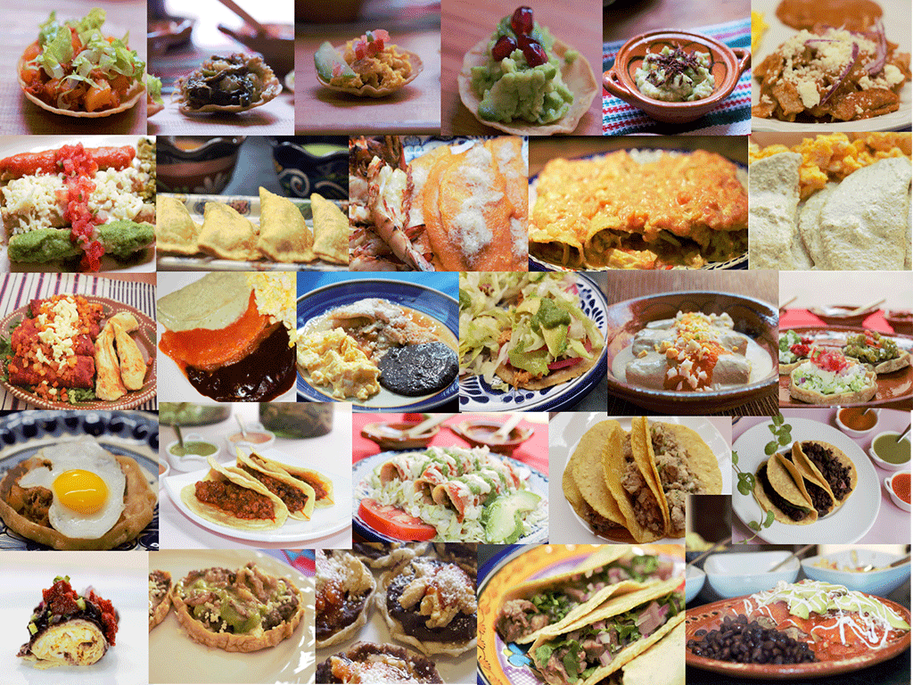
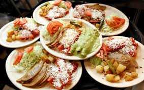
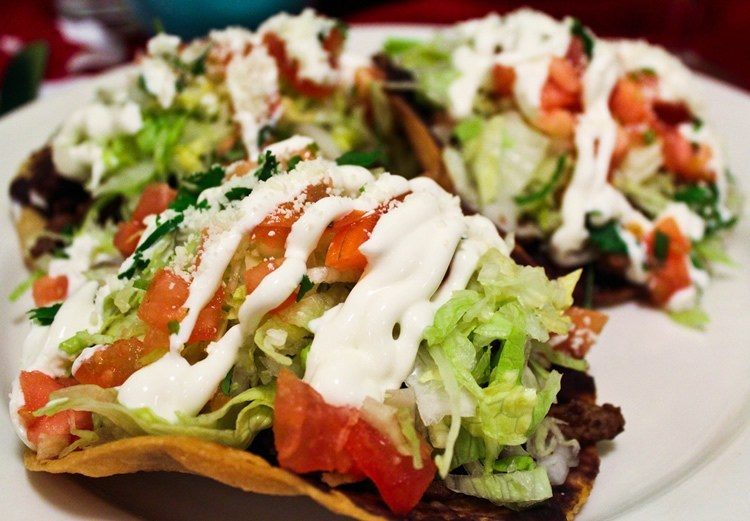
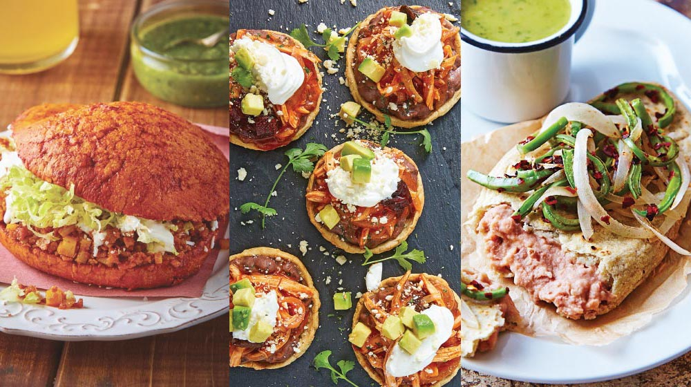

Antojitos Mexicanos
Inicio
Acerca
Links
   
Estos son links para otros restaurantes de comida mexicana a la que podria estar interesado.
Taqueria Juarez
Antojitos El Profe
Sopitas
Antojitos Mexicanos Tauro
Antojitos Mexicanos Mama Marta